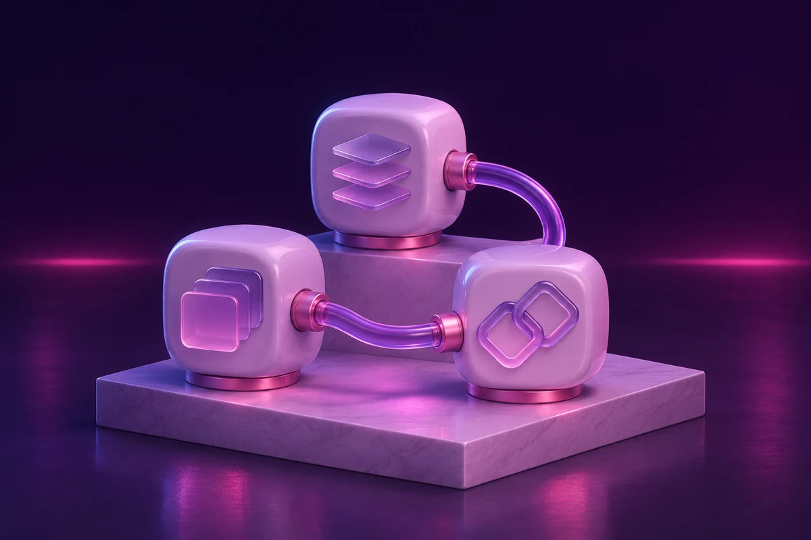

RAZA LABS / AI INTEGRATIONS
Rabta
Typed tools for AI integrations
An independent AI product experiment by Ali Raza.

The public example uses synthetic inputs and a labeled browser baseline. Choose a local integration to run the installed framework or model. No paid API is used.
01 / Explore the workflow
Local setup and verification details are in the repository README. Browser results are examples, not production performance claims.
Keep the evidence
Export the result and inspect the assumptions behind it.